welhome
OVERVIEW
Welhome is an app for Loughborough University students who struggle to find accomodation as the new academic year starts. The aim is to improve the wellbeing, organization, communication and academic success by identifying and applying an iterative human centred process.
OBJECTIVE
Welhome requires a design for an iOS mobile app, along with clearly defined branding that is connected to Loughborough University’s branding. The experience can be presented in a prototype that effectively shows the key features users need from an accommodation finding app with the help of Artificial Intelligence.
ROLE
UI/UX Designer
-
Research and Defining phases carried out in a group of UX students.
-
Ideation, Designing, Prototyping and Iterative processes were individually executed.
Timeline: 3 months
Deliverables: Personas, App Prototype & Branding
Tools: Adobe XD, Sketch
PROCESS / DELIVERABLES
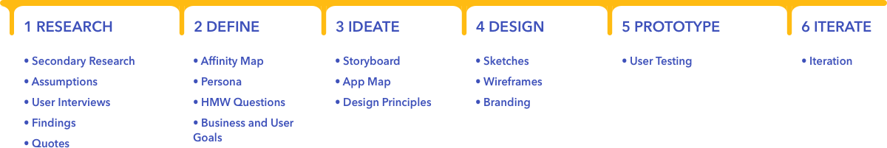
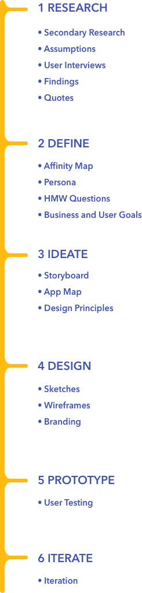
1
RESEARCH
Goal: To understand the current industry and audience through research
Process: Secondary Research | Assumptions | User Interviews
Deliverables: Research Findings | Quotes
SECONDARY RESEARCH
To know what to learn from user interviews, we made a secondary research and created a concrete base for our research.
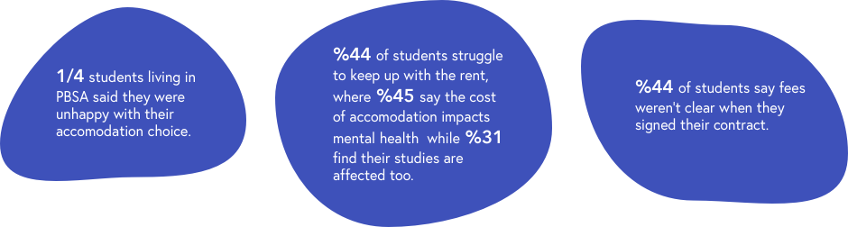
ASSUMPTIONS
Lifestyle: New city - Unknown environment - Complicated contracts
Emotional: Isolation - Feeling lost - Different language/culture
USER INTERVIEWS
We conducted 1:1 user interviews as primary research in order to learn directly from potential users about how they found their current and past accommodations, dig through their experiences and what they would like to have in their future accomodation search. The interviews were conducted in-person and all participants identified themselves as newcomers to Loughborough.
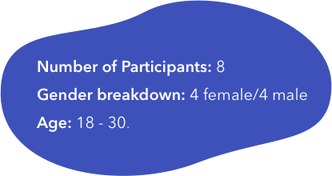
Goal: To define the target user’s needs, goals, motivations and frustrations based on research findings
Used Techniques: Contextual Interviews | Timeline Technique | Card Sorting Activity | Creative Brainstorming
Timeline Technique
We asked our participants to recall a accomodation searching memory in a new city preferably Loughborough and draw a timeline according to the key points they encountered. This helped the process to be smoother by reminding them the process detailly and expressing themselves easily.
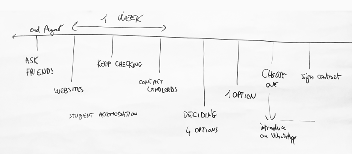
Card Sorting Activity
Then we gave them some cards related to the possible priorities of them when choosing an accomodation and asked to sort them in their importance order. Then talked detailly about each card, also we gave them the flexibility to add their own cards.
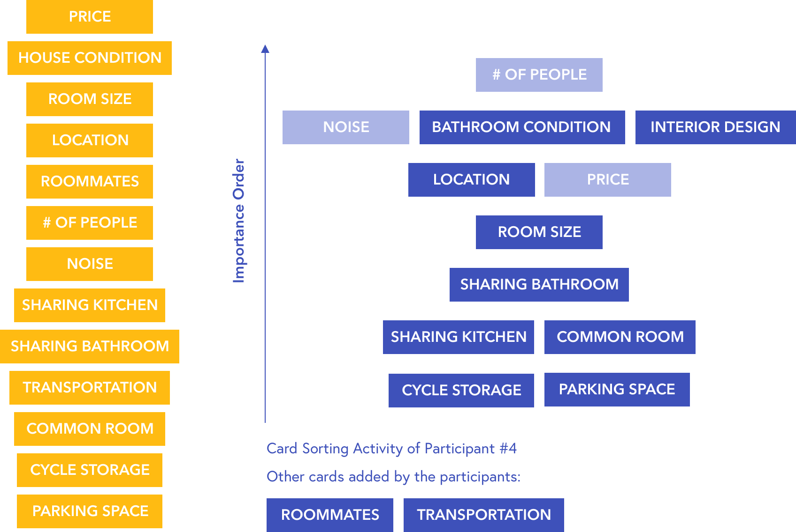
Creative Brainstorming
We asked them to imagine a god-like figure and ask them what would they want from him/her. It is beneficial and easy to gather insights from surreal ideas of participants since it gives hints about the deeply lying problems they encounter but they won’t mention in normal situations.
2
DEFINE
Goal: To define the target user’s needs, goals, motivations and frustrations based on research findings
Process / Deliverables: Affinity Map | Persona | HMW Questions | Business & User Goals
AFFINITY MAPPING
After transcribing the recordings of my conversations, I organized participants’ statements according to patterns that emerged. Then we grouped those statements based on commonalities and themes to determine key insights and identify user needs.
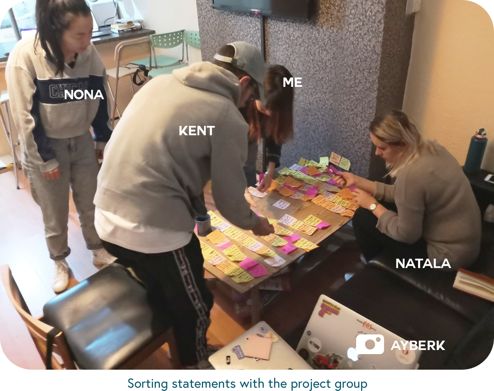
PERSONAS
After creating the affinity map we developed 2 primary personas, fictional representations of our target users, landlord and school representative. Creating a persona helped us to humanize our target user and see their pain points and experience goals they wanna reach with the possible application.
3
IDEATE
Goal: To develop concepts for potential solutions based on research insights
Process / Deliverables: Storyboard | App Map | Design Principles
STORYBOARD
I wanted to further explore how WelHome might meet one of Min’s needs, like suggesting on-point houses when she is abroad and after signing up for a house it eliminated the complicated contract reading by smart contract analyser.
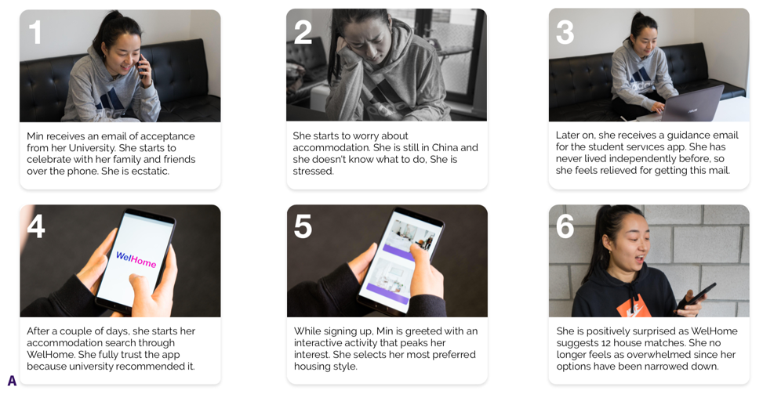
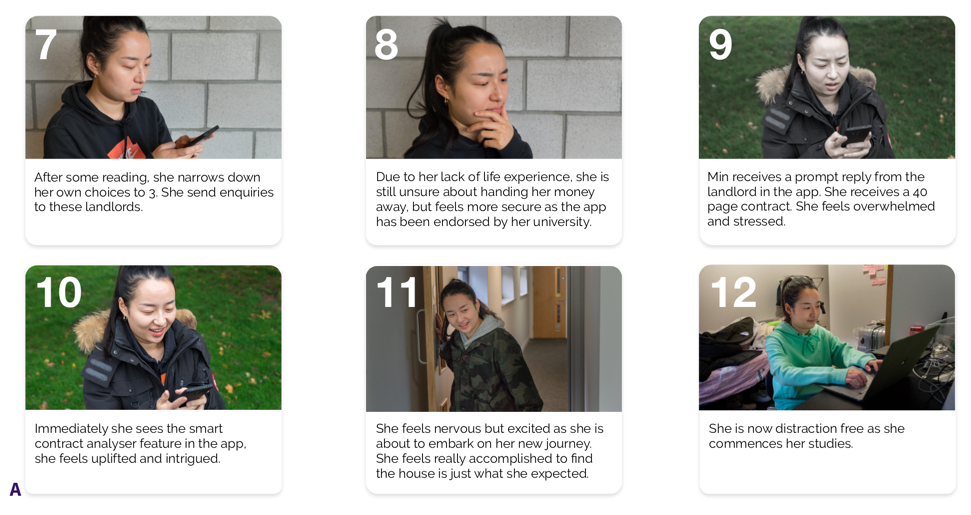
APP MAP
In the end product, it was wanted to present a user flow that shows the key features of WelHome. In order to do that, I decided on an app map to ease the process. This gave me which pages are necessary and how logical connections can be made between the screens.
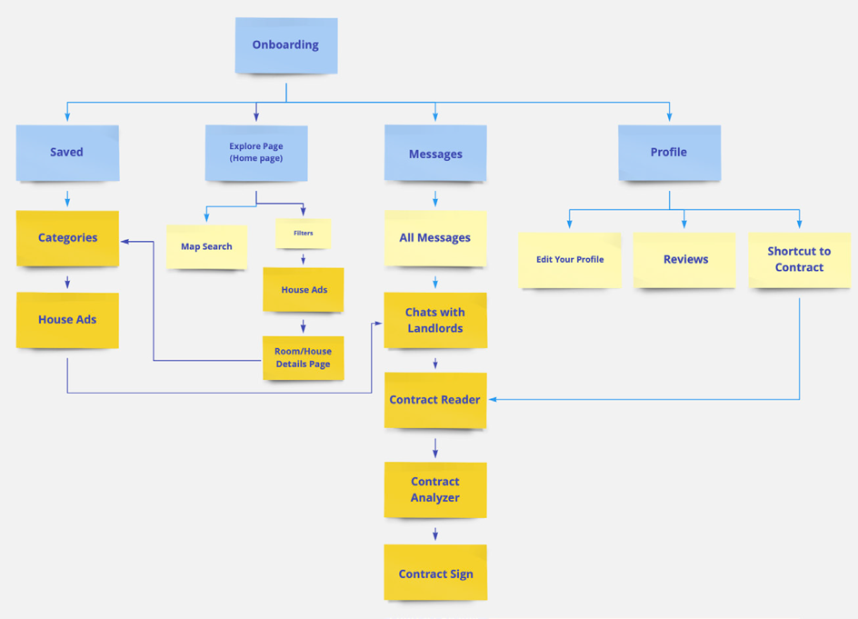
DESIGN PRINCIPLES
Before jumping to wireframing I wanted to determine design principles of Welhome. since the audience is students which are in the category of young adults and the researches stated that they are visually oriented, they are sensitive to application language and they are confident in their own ability to navigate digital interfaces even when encountering radically new design patterns.
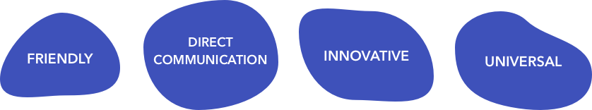
4
DESIGN
Goal: To design an optimum layout and look for WelHome
Process / Deliverables: Sketches | Wireframe | Branding
SKETCHES
After determining the basis of the application the trial sketches have been made. What is need to be added functionally wher it should be placed are decided roughly.
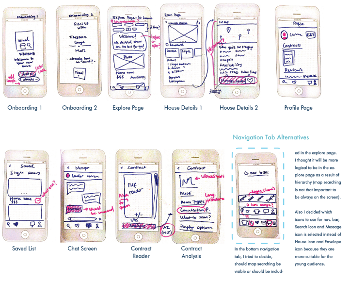
WIREFRAME
The sketches converted into wireframes using Sketch and the detailed layout is achieved for user-testing.
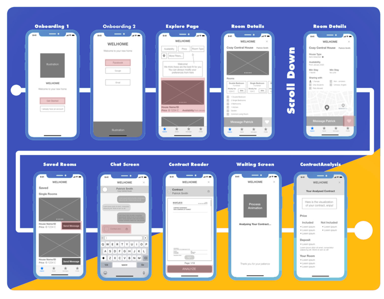
BRANDING
I developed a branding for Welhome with keeping in mind the design principles that I determined earlier: Friendly, innovative, universal, direct communication.
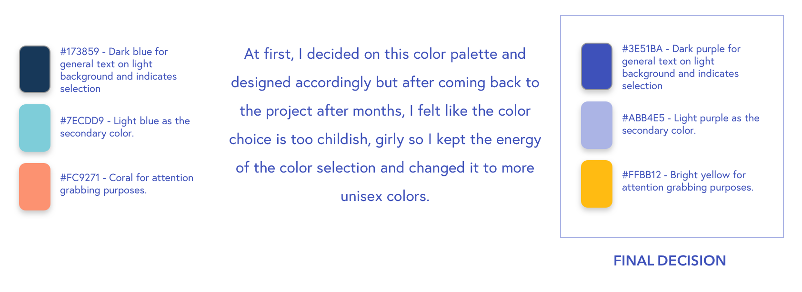
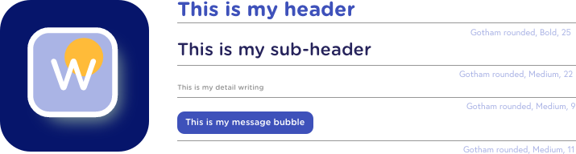
5
PROTOTYPE
Goal: To get feedback from users with my wireframed prototype
Process / Deliverables: Usability testing
USABILITY TESTING
The wireframes created in Sketch is taken to Marvel app and clickable buttons are set for user flow. A Loughborough student (who was familiar with the topic since she had some bad experiences in finding suitable accomodation in various cities (Swansea and Loughborough) went through the pre-determined user flow and afterwards an interview is conducted about the design issues she encountered.
6
ITERATE
Goal: To change the layout of the screens according to the comments and try to meet user needs as much as possible
Process / Deliverables: Iteration
ITERATION
In the light of the comments and my individual evalution I decided to change some parts of my design. I believe with this little touches the overall experience enhanced significantly.
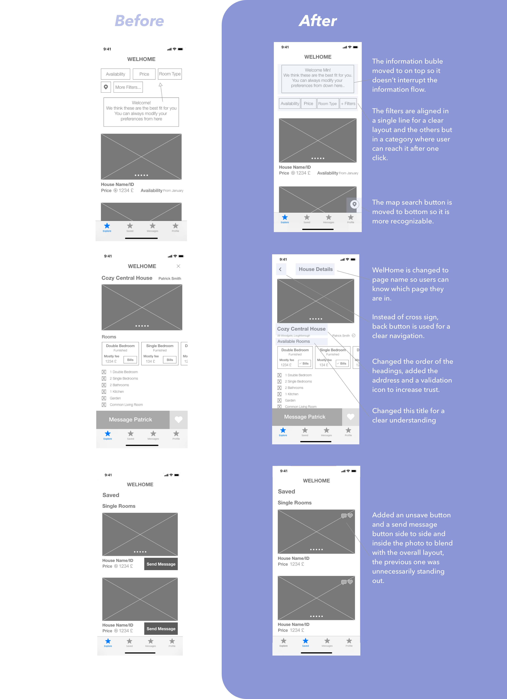

 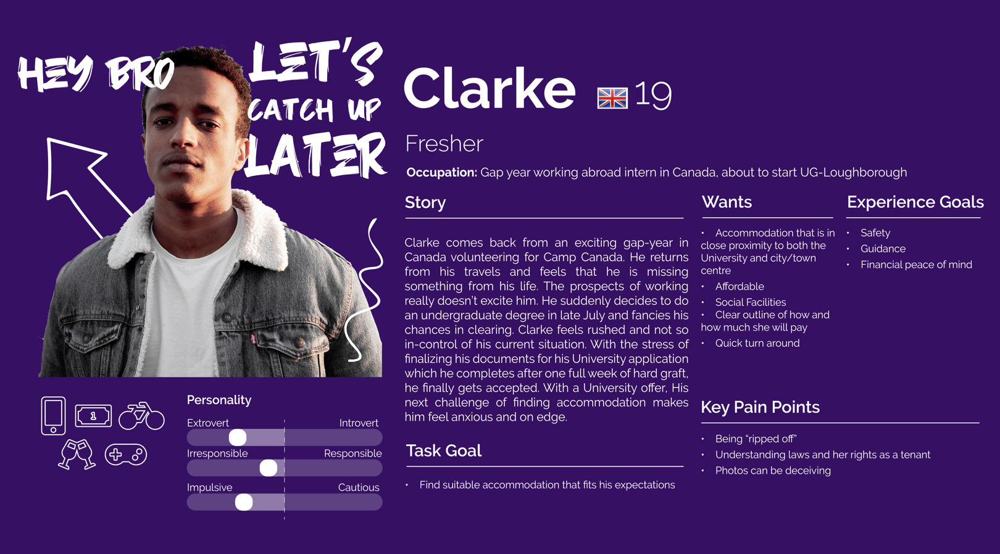
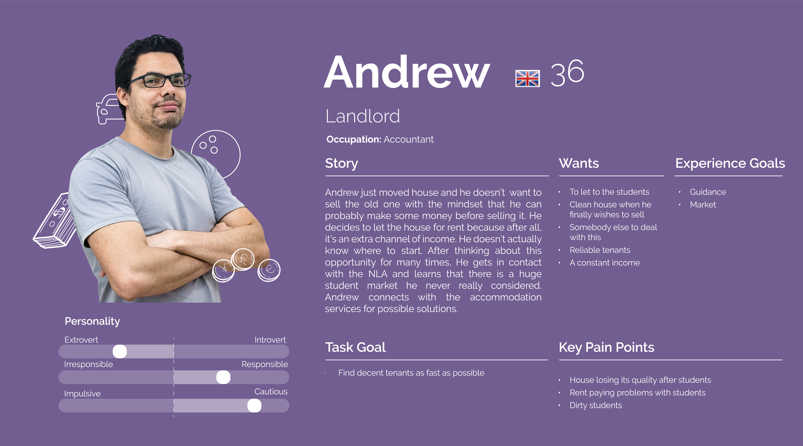
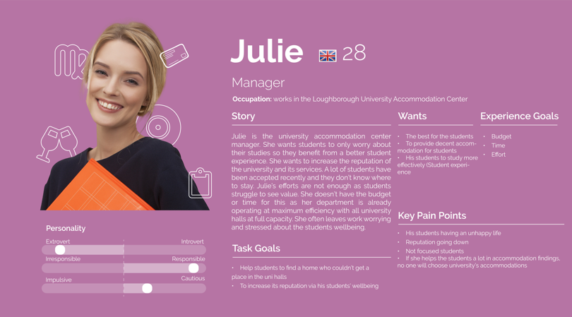
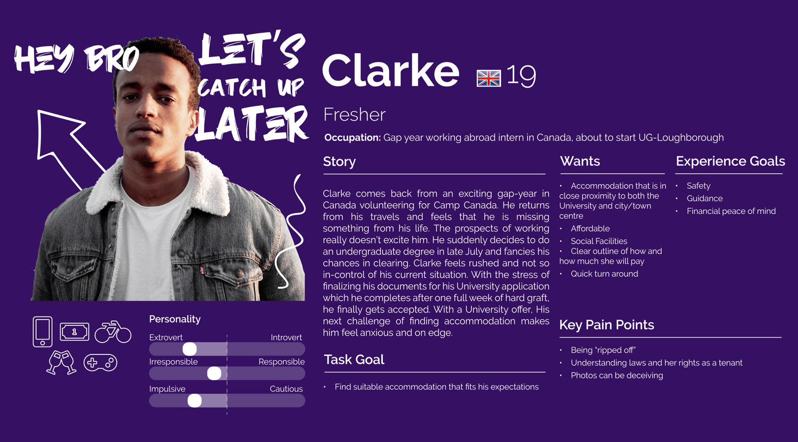
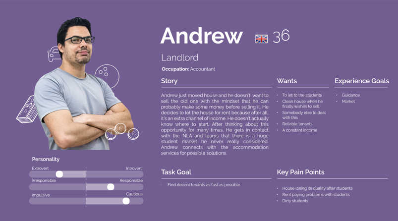
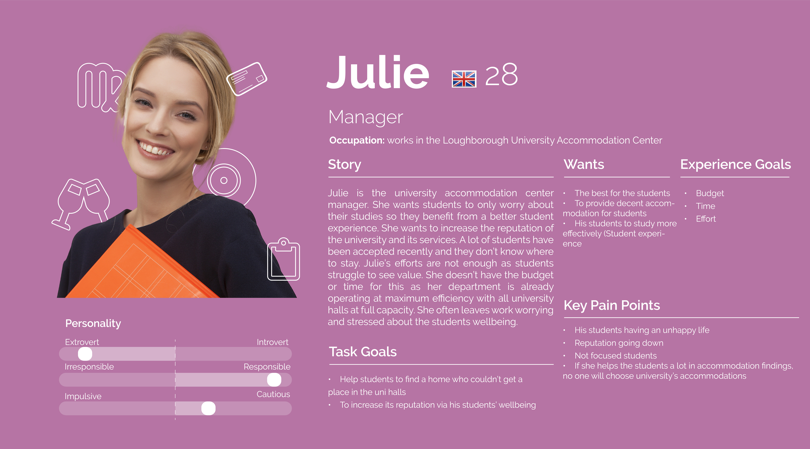